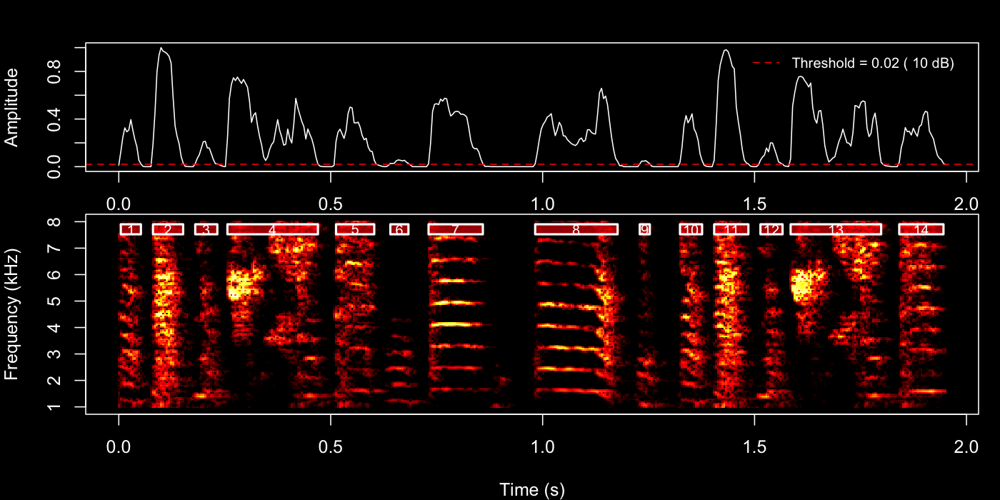
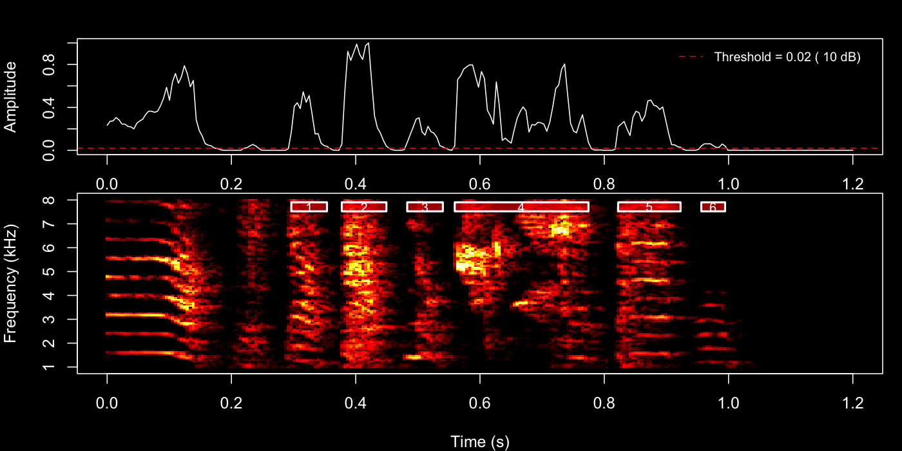
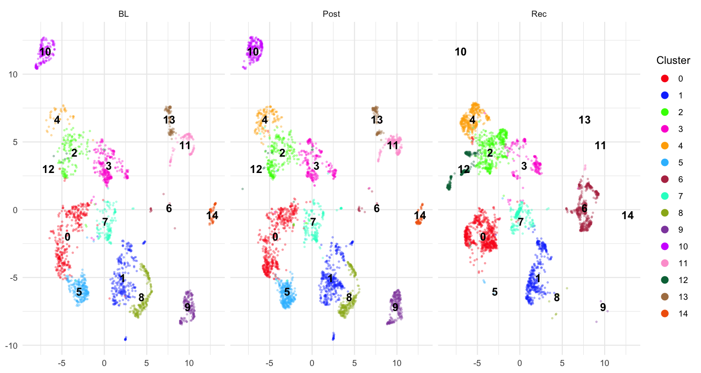

Longitudinal Syllable Segmentation
Source:vignettes/longitudinal_syllable_segmentation.Rmd
longitudinal_syllable_segmentation.RmdIntroduction
This vignette demonstrates how to segment song recordings into individual syllables across longitudinal time points and visualise the resulting acoustic structure with UMAP embeddings.
Prerequisites: Before reading this vignette, we recommend completing:
- Overview: Basic Audio Analysis — Core ASAP functions
- Constructing a SAP Object — SAP object creation
- Longitudinal Bout Detection — Detecting song bouts across development
What you will learn:
- How to segment detected bouts into individual syllables
- How to extract features, cluster, and run UMAP on syllable segments
- How to visualise clustering results to guide subsequent labelling
Overview
What is syllable segmentation? Individual song bouts contain multiple syllables — discrete acoustic units that are the building blocks of the song motif. Syllable segmentation identifies where each syllable starts and ends within a bout or motif recording.
Why segment syllables? Syllable-level analysis enables:
- Identifying the full syllable repertoire of an individual bird
- Tracking changes in syllable acoustic structure across development
- Grouping syllables by acoustic similarity for downstream labelling
- Comparing syllable distributions across developmental stages
Relationship to previous steps: Motif detection (see
Longitudinal Motif
Detection) and bout detection (see Longitudinal Bout Detection)
provide the time windows within which segment() searches
for syllable boundaries. In this vignette we segment within bouts
(segment_type = "bouts").
Load a SAP object
A SAP object organises all recordings across developmental time points. Here we assume you have already populated the object with detected bouts (see Longitudinal Bout Detection).
sap <- readRDS("longitudinal_bout_analysis.rds")Segment bouts (or motifs) into syllables
segment() uses adaptive spectrogram thresholding to
locate individual syllables within each detected bout or motif. Before
running batch segmentation across all recordings, it is good practice to
preview the result on a single example so you can tune
the parameters first.
Key parameters
| Parameter | Role | Typical range |
|---|---|---|
segment_type |
What to segment: "bouts" or "motifs"
|
— |
flim |
Frequency range in kHz | c(1, 10) |
silence_threshold |
Relative amplitude below which a frame is silent | 0.01 – 0.1 |
min_syllable_ms |
Minimum syllable length | 20 – 50 ms |
max_syllable_ms |
Maximum syllable length | 150 – 300 ms |
min_level_db |
Lower dB bound for adaptive search | 5 – 15 dB |
db_delta |
Step size for dB search | 5 – 10 dB |
search_direction |
Direction for dB threshold search: "up" (quiet
recordings) or "down" (loud, clear recordings) |
"up" |
plot_percent |
(SAP method only) Percentage of segments for which a PNG is saved | 10 |
2a — Interactive parameter tuning with default method
The quickest way to explore parameters is to call
segment() directly on a WAV file path.
This invokes default method, which plots the detection envelope and
spectrogram boundaries immediately in your IDE — no files are written.
Set save_plot = FALSE (the default) so the result appears
in the plot pane right away.
Try the 4th bout first:
example_bout <- sap$bouts[4, ]
segment(
file.path(sap$base_path, example_bout$day_post_hatch, example_bout$filename),
start_time = example_bout$start_time,
end_time = example_bout$end_time,
flim = c(1, 8),
silence_threshold = 0.02,
min_syllable_ms = 20,
max_syllable_ms = 240,
min_level_db = 10,
search_direction = "up", # start from min_level_db suits variable recordings
save_plot = FALSE # plot appears in IDE
)
Then try the 22nd motif.
example_motif <- sap$motifs[22, ]
segment(
file.path(
sap$base_path, example_motif$day_post_hatch,
example_motif$filename
),
start_time = example_motif$start_time,
end_time = example_motif$end_time,
flim = c(1, 8),
silence_threshold = 0.02,
min_syllable_ms = 20,
max_syllable_ms = 240,
min_level_db = 10,
search_direction = "up",
save_plot = FALSE
)
Inspect the plot pane after each call. Adjust
silence_threshold or min_level_db and re-run
until boundaries look clean, then use those same values in the next two
steps.
2b — Spot-check a subset with Sap method
Once you have rough parameters, you can verify a small subset of recordings before committing to the full batch. The Sap method accepts two composable filter arguments:
-
day— first restricts the pool of bouts/motifs to those from the specified recording day(s) (matched againstday_post_hatch). -
indices— then selects specific row numbers within that day’s filtered pool. Ifdayis omitted, indices apply across all days.
They work together, not as alternatives. For example, to check bouts 1–5 from the baseline day only:
segment(
sap,
segment_type = "bouts",
day = 190, # restrict to BL (day_post_hatch = 190)
indices = 1:5, # then pick rows 1–5 within that day
flim = c(1, 8),
silence_threshold = 0.02,
min_syllable_ms = 20,
max_syllable_ms = 240,
min_level_db = 10,
db_delta = 10,
search_direction = "up",
save_plot = TRUE,
plot_percent = 100 # save all plots in this spot-check
)Omit indices to process all bouts from
that day, or omit day to apply indices across
the full dataset regardless of recording day.
The PNGs are saved to the default output directory reported in the console. When you are satisfied with the boundaries, carry those parameters into the batch call below.
2c — Batch segmentation across all recordings
Once you are happy with the parameters, run segment()
via the SAP object to process every detected bout across all recordings.
To keep the run fast, set plot_percent to a small value
(e.g. 10) so only a random 10 % of detection plots are
saved — sufficient for a final sanity check without the overhead of
writing thousands of PNGs.
sap <- sap |>
segment(
segment_type = "bouts", # segment within each detected bout
flim = c(1, 8), # 1–8 kHz (zebra finch song range)
silence_threshold = 0.02, # tuned from interactive preview above
min_syllable_ms = 20,
max_syllable_ms = 240,
min_level_db = 10,
db_delta = 10,
search_direction = "up",
save_plot = TRUE,
plot_percent = 10 # save 10% of plots to avoid slowing batch processing
)Detected syllable boundaries are stored in sap$segments.
You can inspect them directly:
head(sap$segments)
#> filename day_post_hatch label selec start_time end_time duration ...
#> S237_42674.wav 190 BL 1-1 1.135 1.178 0.043 ...The workflow here is identical to the one described in Longitudinal Motif
Detection — the same analyze_spectral(),
find_clusters(), and run_umap() functions are
used in exactly the same order. The only difference is the vocal
element being analysed: in the motif tutorial the functions
operate on whole motifs (segment_type = "motifs", which is
the default), whereas here we pass
segment_type = "segments" to work on the individual
syllables we just detected.
sap <- sap |>
analyze_spectral(
segment_type = "segments"
) |>
find_clusters(
segment_type = "segments"
) |>
run_umap(
segment_type = "segments",
min_dist = 0.3
)The 2-D coordinates are appended to
sap$features$segment$feat.embeds as UMAP1 and
UMAP2.
Saving the SAP object
Now that the SAP object contains segment boundaries, spectral
features, cluster assignments, and UMAP embeddings, save it so you can
continue directly in the Syllable
Labelling tutorial. The embeddings are required by
auto_label():
saveRDS(sap, "longitudinal_syllable_analysis.rds")
# Reload later with:
sap <- readRDS("longitudinal_syllable_analysis.rds")What gets saved: - All metadata, motif, and bout
data from earlier steps - Detected syllable boundaries
(sap$segments) - Spectral features
(sap$features$segment$feat.mat) - Cluster assignments and
UMAP embeddings (sap$features$segment$feat.embeds)
Important notes: - The original WAV files are
not included in the saved object - You must keep WAV
files at their original paths to run additional analyses - The saved
.rds file is typically much smaller than the audio data
Visualise UMAP
plot_umap() renders an interactive scatter plot of
segments in UMAP space, coloured and faceted to reveal developmental
differences.
plot_umap(sap,
segment_type = "segments",
split.by = "label", # one panel per developmental stage
label = TRUE # show cluster numbers on the plot
)
Each panel shows one developmental stage (BL, Post, Rec). Distinct clouds of points that remain stable across panels correspond to acoustically consistent syllable types — good candidates for labelling. Scattered or overlapping clouds may suggest that the segmentation parameters need adjustment.
Interpreting UMAP output
- Tight, separated clusters → well-defined syllable types; proceed to Syllable Labelling
-
Overlapping clusters → increase
find_clusters()resolution, or adjust spectral feature range -
Many outliers → lower
min_syllable_ms(too-short segments may be noise) or raisesilence_threshold
Complete pipeline (copy-paste reference)
library(ASAP)
# -- Create SAP object --
sap <- create_sap_object(
base_path = "/path/to/recordings",
subfolders_to_include = c("190", "201", "203"),
labels = c("BL", "Post", "Rec")
)
# -- Motif & Bout detection --
sap <- sap |>
create_audio_clip(
indices = 1, start_time = 1, end_time = 2.5,
clip_names = "motif_ref"
) |>
create_template(
template_name = "syllable_d", clip_name = "motif_ref",
start_time = 0.72, end_time = 0.84,
freq_min = 1, freq_max = 10,
threshold = 0.5, write_template = TRUE
) |>
detect_template(template_name = "syllable_d") |>
find_motif(template_name = "syllable_d", pre_time = 0.7, lag_time = 0.5) |>
find_bout(min_duration = 0.4, summary = TRUE) |>
# -- Segmentation pipeline --
segment(
segment_type = "bouts", flim = c(1, 8),
silence_threshold = 0.02,
min_syllable_ms = 20, max_syllable_ms = 240,
min_level_db = 10, db_delta = 10,
search_direction = "up",
save_plot = TRUE, plot_percent = 10
) |>
analyze_spectral(segment_type = "segments") |>
find_clusters(segment_type = "segments") |>
run_umap(segment_type = "segments", min_dist = 0.3) |>
plot_umap(segment_type = "segments", split.by = "label", label = TRUE)Next steps
Once you are satisfied with the UMAP structure, proceed to Syllable Labelling to assign
meaningful letter identities to each cluster using automatic
(auto_label()) and manual (manual_label())
labelling.
Session info
sessionInfo()
#> R version 4.5.3 (2026-03-11)
#> Platform: x86_64-pc-linux-gnu
#> Running under: Ubuntu 24.04.3 LTS
#>
#> Matrix products: default
#> BLAS: /usr/lib/x86_64-linux-gnu/openblas-pthread/libblas.so.3
#> LAPACK: /usr/lib/x86_64-linux-gnu/openblas-pthread/libopenblasp-r0.3.26.so; LAPACK version 3.12.0
#>
#> locale:
#> [1] LC_CTYPE=C.UTF-8 LC_NUMERIC=C LC_TIME=C.UTF-8
#> [4] LC_COLLATE=C.UTF-8 LC_MONETARY=C.UTF-8 LC_MESSAGES=C.UTF-8
#> [7] LC_PAPER=C.UTF-8 LC_NAME=C LC_ADDRESS=C
#> [10] LC_TELEPHONE=C LC_MEASUREMENT=C.UTF-8 LC_IDENTIFICATION=C
#>
#> time zone: UTC
#> tzcode source: system (glibc)
#>
#> attached base packages:
#> [1] stats graphics grDevices utils datasets methods base
#>
#> loaded via a namespace (and not attached):
#> [1] digest_0.6.39 desc_1.4.3 R6_2.6.1 fastmap_1.2.0
#> [5] xfun_0.56 cachem_1.1.0 knitr_1.51 htmltools_0.5.9
#> [9] rmarkdown_2.30 lifecycle_1.0.5 cli_3.6.5 sass_0.4.10
#> [13] pkgdown_2.2.0 textshaping_1.0.5 jquerylib_0.1.4 systemfonts_1.3.2
#> [17] compiler_4.5.3 tools_4.5.3 ragg_1.5.1 evaluate_1.0.5
#> [21] bslib_0.10.0 yaml_2.3.12 jsonlite_2.0.0 rlang_1.1.7
#> [25] fs_1.6.7